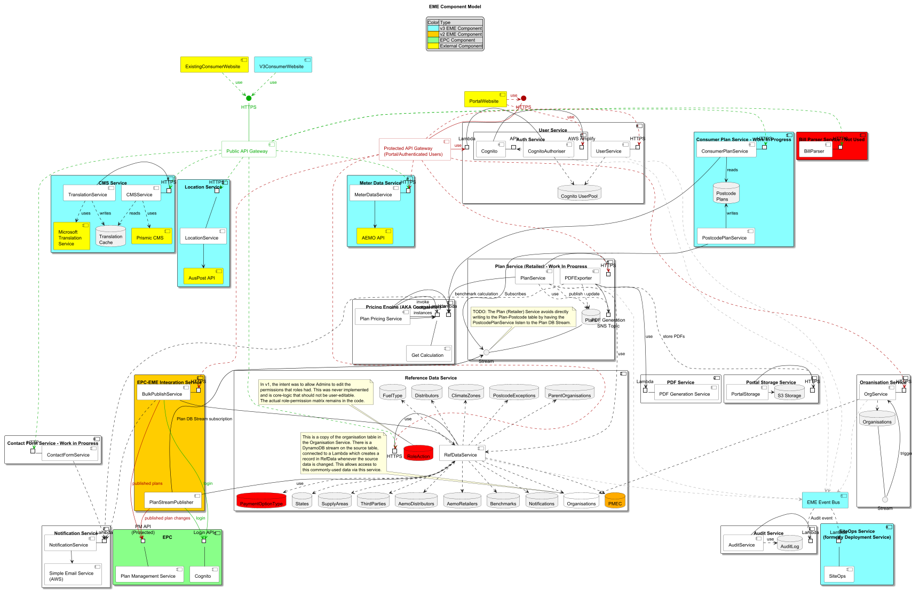

@startuml
!pragma layout smetana
title EME Component Model
skinparam componentStyle uml2
skinparam linetype polyline
top to bottom direction
' Set the screen size for this large diagram
skinparam dpi 60
skinparam component {
BackgroundColor<<V3>> #8ff
BackgroundColor<<external>> #ff0
BackgroundColor #fff
Shadowing<<package>> true
}
skinparam <<Public>> {
ArrowColor #0a0
ArrowFontColor #0a0
ComponentBorderColor #0a0
ComponentFontColor #0a0
InterfaceBackgroundColor #0a0
InterfaceBorderColor #0a0
InterfaceFontColor #0a0
}
skinparam <<Protected>> {
ArrowColor #a00
ArrowFontColor #a00
ComponentBorderColor #a00
ComponentFontColor #a00
InterfaceBackgroundColor #a00
InterfaceBorderColor #a00
InterfaceFontColor #a00
}
hide stereotype
'/ Legend
legend top
|Color| Type |
|<#8ff>| v3 EME Component|
|<#fc0>| v2 EME Component|
|<#8f8>| EPC Component|
|<#ff0>| External Component|
endlegend
'/ Toggle this to hide/show details:
'hide <<api>>
'hide <<fn>>
'hide <<db>>
'hide <<S3>>
'hide <<SQS>>
'hide <<SNS>>
'/ Top Level components
component ExistingConsumerWebsite <<external>>
component V3ConsumerWebsite <<V3>> <<external>>
component PortalWebsite <<external>>
component "EME Event Bus" as BUS <<fn>> <<V3>>
component "Protected API Gateway\n(Portal/Authenticated Users)" <<AWS>><<Protected>> as APIG
() HTTPS as APIGHTTP <<Protected>>
APIG -u- APIGHTTP <<Protected>>
component "Public API Gateway" <<AWS>><<Public>> as PAPIG
() HTTPS as PAPIGHTTP <<Public>>
PAPIG -u- PAPIGHTTP <<Public>>
component "Audit Service" <<package>> {
port Lambda as ASH
component "AuditService" as AS <<fn>>
database AuditLog as ADB <<db>>
AS - ASH
AS .> ADB : use
}
component "Bill Parser Service - Not Used" <<package>> #f00 {
port HTTPS as BSH
component BillParser as BP <<fn>>
BP - BSH
}
component "CMS Service" <<package>> <<V3>> {
port HTTPS as CMSH
component "CMSService" as CCS <<fn>>
component "TranslationService" as TLS <<fn>>
component "Microsoft\nTranslation\nService" <<external>><<api>> as MSTS
component "Prismic CMS" <<external>><<api>> as CMS
database "Translation\nCache" as TLDB <<db>>
CCS - CMSH
TLS - CMSH
CCS ..> TLDB : reads
TLS ..> TLDB : writes
TLS ..> MSTS : uses
CCS ..> CMS : uses
}
component "Consumer Plan Service - Work In Progress" <<package>> <<V3>> {
port HTTPS as CPSH
component ConsumerPlanService as CPS <<fn>>
component PostcodePlanService as PPS <<fn>>
database "Postcode\nPlans" as PPDB <<db>>
CPS - CPSH
CPS -down-> PPDB : reads
PPS -up-> PPDB : writes
}
component "Contact Form Service - Work in Progress" <<package>> {
port HTTP as CFH
component "ContactFormService" as CFS <<fn>>
CFH - CFS
}
component "EPC" <<package>><<external>> #88ff88 {
port "Login API" as EPC_COGAPI
component Cognito <<AWS>> as EPC_COG
EPC_COG -u- EPC_COGAPI
port "PM API\n(Protected)" as EPC_PMH
component "Plan Management Service" as EPC_PM
EPC_PM -u- EPC_PMH
}
component "EPC-EME Integration Service" <<package>> #ffcc00 {
port HTTPS as EEI_BULKH
component BulkPublishService as EEI_BULK <<fn>>
component PlanStreamPublisher as EEI_PS <<fn>>
EEI_BULK - EEI_BULKH
EEI_BULK -[hidden]-- EEI_PS
}
component "Location Service" <<package>> <<V3>> {
port HTTPS as LH
component "LocationService" as LS <<fn>>
component "AusPost API" as APA <<external>>
LS -up- LH
LS -down-> APA
}
component "Meter Data Service" <<package>> <<V3>> {
port HTTPS as MDH
component "MeterDataService" as MDS <<fn>>
component "AEMO API" as AEMO <<external>>
MDS - MDH
MDS -down-> AEMO
}
component "Notification Service" <<package>> {
port Lambda as NSL
component "NotificationService" as NS <<fn>>
component "Simple Email Service\n(AWS)" as SES <<AWS>>
NS - NSL
NS -down-> SES
}
component "Organisation Service" <<package>> {
port HTTPS as OSH
component "OrgService" as OS <<fn>>
database Organisations as ODB <<db>>
() Stream as ODBS <<db>>
OS - OSH
OS .> ODB
ODB - ODBS
' The stream triggers the service
ODBS ---> OS : triggers
}
component "PDF Service" {
port Lambda as PDFL
component "PDF Generation Service" as PDFS
PDFL - PDFS
}
component "Plan Service (Retailer) - Work In Progress" <<package>> {
port HTTPS as PSH
component PlanService as PS <<fn>>
database Plans as PDB <<db>>
() Stream as PSS <<db>>
PDB -d- PSS
Port "PDF Generation\nSNS Topic" <<SNS>> as PGT
component PDFExporter <<fn>> as PDFEXP
PDFEXP - PGT
PS - PSH
PS ..> PDB : use
PS ..> PGT : publish
PDFEXP ..> PDB : update
note top of PSS
TODO: The Plan (Retailer) Service avoids directly
writing to the Plan-Postcode table by having the
PostcodePlanService listen to the Plan DB Stream.
end note
}
component "Portal Storage Service" <<package>> {
Port HTTPS as POSH
component PortalStorage <<fn>> as POSS
database "S3 Storage" <<S3>> as PSS3
POSS - POSH
POSS -> PSS3
}
component "Pricing Engine (AKA Comparator)" <<package>> {
port Lambda as PEL
component "Plan Pricing Service" as PCS <<fn>>
component "Get Calculation" as D61 <<fn>>
port Lambda as D61Int <<fn>>
PCS - PEL
PCS -> D61Int
PCS -> D61Int
PCS -> D61Int : invoke\nmultiple\ninstances
D61Int -down- D61
}
component "Reference Data Service" <<package>> {
port HTTPS as RDSH
component "RefDataService" as RDS <<fn>>
database AemoDistributors <<db>>
database AemoRetailers <<db>>
database Benchmarks <<db>>
database ClimateZones <<db>>
database Distributors <<db>>
database FuelType <<db>>
database Notifications <<db>>
database Organisations <<db>> #fff
database PMEC <<db>> #ffaa00
database ParentOrganisations <<db>>
database PaymentOptionType <<db>> #f00
database PostcodeExceptions <<db>>
database RoleAction <<db>> #f00
database States <<db>>
database SupplyAreas <<db>>
database ThirdParties <<db>>
RDS - RDSH
RDS ..> AemoDistributors
RDS ..> AemoRetailers
RDS ..> Benchmarks
RDS .up.> ClimateZones
RDS .up.> Distributors
RDS .up.> FuelType
RDS ..> Notifications
RDS ..> Organisations
RDS .up.> ParentOrganisations
RDS ..> PaymentOptionType
RDS ..> PMEC
RDS .up.> PostcodeExceptions
RDS ..> States
RDS ..> SupplyAreas
RDS ..> ThirdParties
note top of RoleAction
In v1, the intent was to allow Admins to edit the
permissions that roles had. This was never implemented
and is core-logic that should not be user-editable.
The actual role-permission matrix remains in the code.
end note
note top of Organisations
This is a copy of the organisation table in
the Organisation Service. There is a
DynamoDB stream on the source table,
connected to a Lambda which creates a
record in RefData whenever the source
data is changed. This allows access to
this commonly-used data via this service.
end note
}
component "SiteOps Service\n(formerly Deployment Service)" <<package>> <<V3>> {
port Lambda as SIH
component "SiteOps" as SI <<fn>>
SI -up- SIH
}
component "User Service" <<package>> {
port HTTPS as USH
port Lambda as CAL
component "Auth Service" {
component Cognito <<AWS>><<fn>> as COG
component "CognitoAuthoriser" as CUSTA <<fn>> #ffffff
port "AWS Amplify" as COGHTTP
port API as COGAPI
COG - COGHTTP
COG - COGAPI
}
component "UserService" as US <<fn>>
database "Cognito UserPool" as COGDB <<db>>
CUSTA - CAL
US - USH
CUSTA ..> COGDB
US ..> COGDB
}
ExistingConsumerWebsite ..> PAPIGHTTP <<Public>> : use
V3ConsumerWebsite ..> PAPIGHTTP <<Public>> : use
PortalWebsite .> APIGHTTP <<Protected>> : use
PortalWebsite ..> COGHTTP <<Protected>> : use
'/ All other connections
PAPIG .> BSH <<Public>>
PAPIG .> CFH <<Public>>
PAPIG ..> CMSH <<Public>>
PAPIG .> CPSH <<Public>>
PAPIG ..> LH <<Public>>
PAPIG .> MDH <<Public>>
PAPIG ........> RDSH <<Public>>
APIG ..> OSH <<Protected>>
APIG .> PSH <<Protected>>
APIG ........> RDSH <<Protected>>
APIG -> CAL <<Protected>> : use
APIG .> USH <<Protected>>
APIG .> EEI_BULKH <<Protected>>
APIG ..> MDH <<Protected>>
'APIG ..> ASHT #a00 ' This is not yet implemented - nothing is reading the audit data
CPS ---d--> PEL
PS -> PEL : benchmark calculation
COGAPI <. CUSTA
PPS ---> PSS : Subscribes
PSS <---- EEI_PS #000000: Plan DB Stream subscription
EEI_BULK --> RDS: use
EEI_PS -u-> RDS: use
EEI_BULK -d-> EPC_COGAPI <<Public>>: login
EEI_PS -d-> EPC_COGAPI <<Public>>: login
EEI_BULK -d-> EPC_PMH <<protected>>: published plans
EEI_PS -d-> EPC_PMH <<protected>>: published plan changes
' Org Service updates the RefData Organisations table
OS .> Organisations
' Event Bus events trigger SiteOps
BUS ..> SIH
' Audit Service Events. Currently these point directly to the Audit Lambda,
' but we want them to point to the Event Bus
OS ...> BUS #aaa
PS ..> BUS #aaa
RDS ..> BUS #aaa
CUSTA ..> BUS #aaa
US ..> BUS #aaa
BUS ..> ASH : Audit event
' Plan / Portal Storage / PDF Gen
PDFEXP .d...> POSH : store PDFs
PS .> RDS : use
PDFEXP -d---> PDFL : use
' Notification
CFS ...> NSL
EEI_BULK ....> NSL
PDFEXP .....> NSL
@enduml